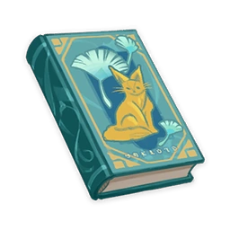

Mondstadt · Books & Literature
The Fox in the Dandelion Sea
This eleven-volume Mondstadt fairy tale follows a hunter who spares a white fox, makes a bargain with her, and is ultimately transformed by fox magic.

An Eleven-Volume Mondstadt Fairy Tale
The Fox in the Dandelion Sea is an eleven-volume Mondstadt fairy tale about an unnamed hunter and a fox. The opening establishes the book’s storybook frame through the hunter’s encounter with a trapped white fox; the collection then follows the fox and her cub, the hunter’s bargain with them, and the strange magic that reshapes their lives.
The book’s repeated references to dandelions and the Anemo Archon make it a local folk tale. They do not establish that its unnamed characters are historical figures or that the collection records an actual event.
The Hunter and the White Fox
The hunter finds a white fox caught in a trap. He initially thinks of taking it as prey. The fox later returns in human form and leads him to the dandelion sea, a wondrous place associated with foxes and the lost animals they hunt.
The story gradually turns the hunter from a pursuer into a companion. Its shifting point of view and fairy-tale imagery are part of the book’s design, not a natural-history account of foxes.
A Bargain with the Foxes
The hunter and the fox woman make an exchange: he will teach her cub human speech, and she will teach him fox magic. The cub’s growth, the hunter’s lessons, and the foxes’ attempts to live beyond the reach of hunters carry the story through the later volumes.
The fairy tale treats the bargain as a relationship built through teaching and trust, even as it keeps the foxes’ magic mysterious.
Volume XI: The Dandelion Reversal
The final volume brings the hunter’s journey to a striking end: he realizes he has become a dandelion, while the fox mother prays to the Anemo Archon for a world in which foxes might become human and escape hunters. The reversal changes the story’s opening hunt into a reflection on safety, freedom, and perspective.
The text does not name the fox woman, explain her origin, or identify her with a known Mondstadt character. Any such connection is a theory beyond the eleven-volume story.
This is an original CoreGG reading guide, not an official HoYoverse article or a reproduction of the game text. Source links below identify the records used so you can check the original context.
Sources & references
Check these sources for the original game text and reference trail.